The presidential runoff of 25 October 2026 — do the numbers add up?
The tests found no evidence of manipulation
I checked all 499,248 polling sections with eleven groups of statistical tests. I compared them with the 2022 runoff and the 2026 first round, and checked saved election-night results. Taken together, these checks do not show manipulation. Some digit patterns differ from the test models, as in the first round. The simulation checks show sensitivity to two specific changes; they cannot rule out every kind of fraud.
The first-round model picked the wrong winner: a 4.36 percentage-point miss
51.79% for Lula against 48.21% for Flávio Bolsonaro: the first round’s runner-up won the runoff
The scenario using 2022 transfer rates predicted Bolsonaro 52.6%; the result shows that those assumptions did not carry over to 2026
What happened on 25 October 2026
Lula (PT) and Flávio Bolsonaro (PL), the top two candidates on 4 October, faced each other in the 25 October 2026 runoff. TSE published results by section on 26–27 October: 499,248 sections and 128,236,074 ballots. Every arithmetic check passed, and the totals match the saved election-night portal results exactly. The portal’s final update is marked 23:26 BRT, about six and a half hours after polls closed.
Runoff result
Election night: the lead flipped
- at 0.2% countedLula 58.6%
- at 29% countedBolsonaro 50.5%
- at 95% countedLula 51.7%
Turnout: 80.78%
- ballots cast128.2M
- registered voters158.7M
- blank + null votes3.2%
Governor runoffs the same day
- RN50.77% — margin 1.54 pp
- ES52.17%
- AC · AM · DF · TO57–66%
What changed between the two rounds?
Three weeks after a first round with 13 candidates, voters chose between two finalists. I matched the same 499,248 polling sections across rounds. Their totals let me model how support may have shifted, but cannot reveal anyone’s individual vote.
The model missed by 4.36 percentage points
The first-round model assumed that support would shift as estimated for 2022. It gave Flávio Bolsonaro 52.6%; Lula actually won 51.79%. The model’s narrow uncertainty range (±0.03 percentage points) came only from repeatedly sampling its data. It left out uncertainty about matching different candidates and changes in voter behaviour.
The model’s assumptions did not hold in 2026
Refitting the model to both 2026 rounds breaks down the 4.36 percentage-point error. It assigns −1.24 points to blank votes: the 2022 model sent them to neither finalist, while the 2026 model sends two thirds to Lula. Cury’s category accounts for −1.15 points (27.9% for Lula in the mapped 2022 model, versus 69.3% in 2026), null votes for −0.91, and higher estimated retention of Lula’s support for −0.87 (98.9% versus 96.8%). These are model estimates from section totals, not observed voter movements.
The lead changed as different areas reported
Lula led with 1.56% counted, Bolsonaro with 28.66%, and Lula again with 95.33%. The saved updates show two changes of leader, but not their exact times. Lula averaged 46.7% in the 11 areas that first passed 50% counted, versus 54.0% in the other 17. These 28 areas include the Federal District and votes abroad.
How the model compared with the result
For the first-round analysis, I matched 2026 candidates with 2022 vote categories that had similar geographic support. I then used the estimated 2022 transfer rates without changing them. The 25 October runoff tests that scenario against a result the model had not used.
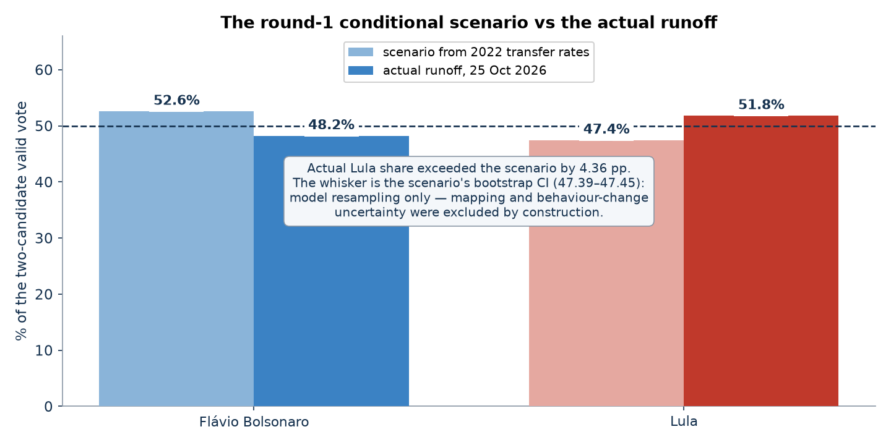
Where support may have shifted: model estimates
I fitted the transfer model to both 2026 rounds. For each first-round vote category, it estimates a split between the two finalists, blank or null votes, and not voting. I used non-negative least squares (NNLS), trained on 80% of sections and checked on the remaining 20%, with 200 repeated samples (bootstrap). On sections kept out of fitting, r² was 0.978 and the average absolute error was 3.1 votes per section. Estimated retention was 98.9% for Lula and 99.2% for Bolsonaro; the model assigns 88.1% of Zema’s category to Bolsonaro and 69.3% of Cury’s to Lula. A close fit to section totals does not confirm these individual transfer rates.
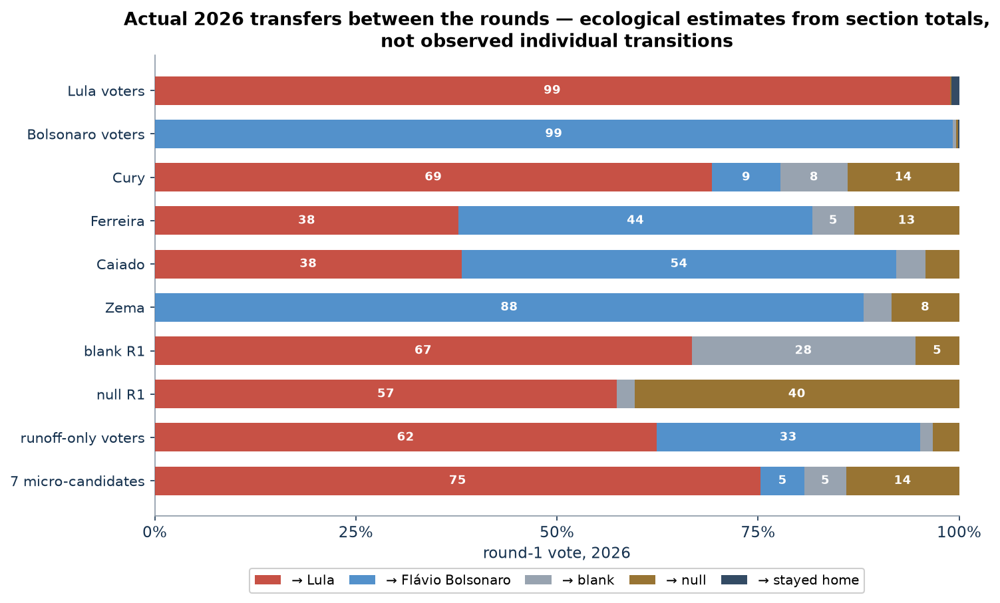
| round-1 vote | 2022 rates used in the model | estimated 2026 rates | part of the 4.36-point error |
|---|---|---|---|
| Cury 3.45M | → Lula 27.9% | → Lula 69.3 / Bolsonaro 8.5 | −1.15 pp |
| Ferreira 2.68M | → Lula 27.9% | → Lula 37.8 / Bolsonaro 44.0 | −0.21 pp |
| Caiado 2.61M | → Lula 27.9% | → Lula 38.2 / Bolsonaro 54.0 | −0.22 pp |
| Zema 0.33M | → Bolsonaro 93.4% | → Bolsonaro 88.1 / Lula 0 | +0.04 pp |
| blank 2.30M | → neither (0%) | → Lula 66.7 | −1.24 pp |
| null 3.67M | → Lula 26.7% | → Lula 57.5 / stayed null 40.3 | −0.91 pp |
| runoff-only voters | → 48.1 / 47.3 (2022) | → Lula 62.4 / Bolsonaro 32.7 | — |
How the lead changed on election night
I saved 13 portal snapshots between 17:07 BRT on 25 October and 04:52 BRT on 26 October. They contain eight different national updates. The last update is timestamped 23:26 BRT on 25 October. Saving it again later does not make it a new stage of the count.
The national total gives Lula 58.59% with 0.21% counted, 52.16% at 1.56%, 49.54% at 28.66%, and 51.72% at 95.33%. Early state tables lag behind the national total, so I cannot reliably assign the first shift to particular states or votes abroad. From the 1.56% snapshot, the state figures show southern results lowering Lula’s share and northeastern results raising it again. The gaps between snapshots leave parts of the count unobserved.
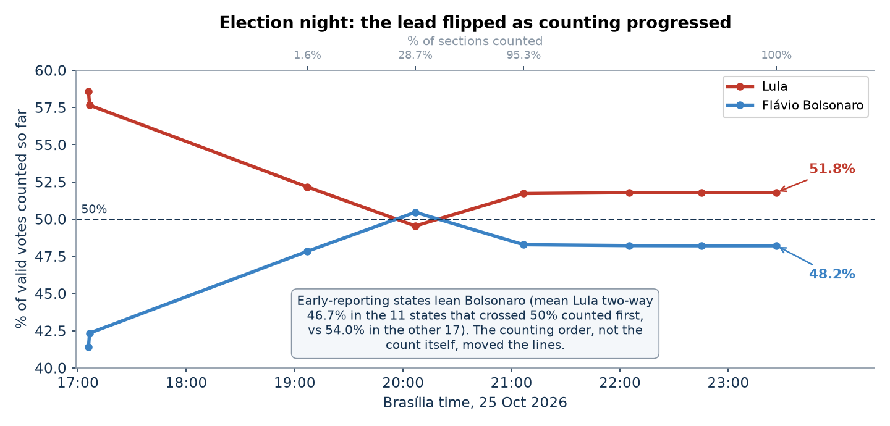
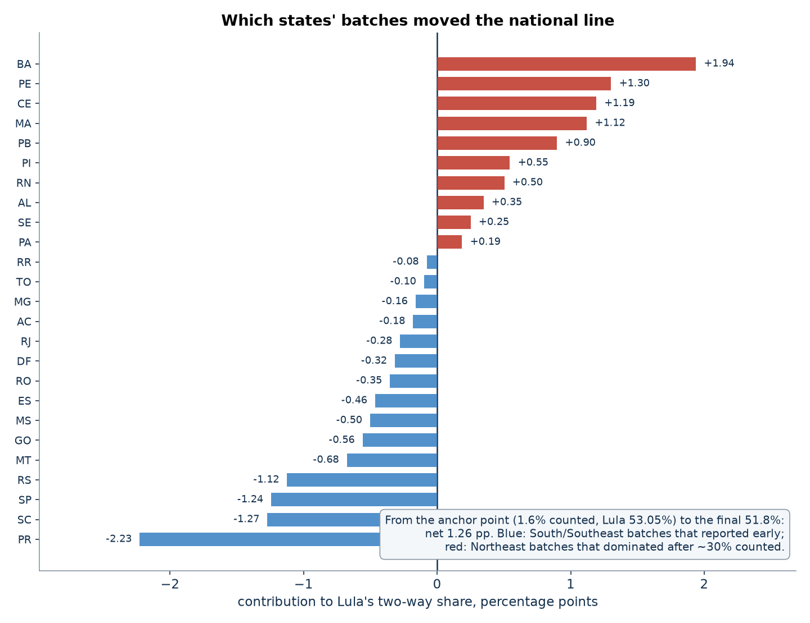
What each check found
I ran eleven groups of checks on the runoff totals by polling section. The 2022 runoff and the 2026 first round provide comparisons on the same sections. The turnout, digit and correlation patterns broadly resemble those comparisons. Together, the checks do not show manipulation, but cannot certify that an election was free of fraud.
Votes in sections with very high turnout
I set the high-turnout cutoff at 92.5%: 99.5% of sections are at or below it. Sections above it hold 0.59% of ballots, including 0.71% of Lula’s votes and 0.46% of Flávio Bolsonaro’s. These are high-turnout votes, not a count or upper limit of fraudulent votes.
The 92.5% cutoff leaves 99.5% of runoff sections at or below it. Above it are 749,738 voters, or 0.59% of ballots, including 453,486 Lula votes (0.71% of his total) and 275,583 Bolsonaro votes (0.46%). A cutoff chosen this way always selects a small fraction of sections. It describes unusually high turnout; it does not identify fraudulent votes or limit how many could exist.
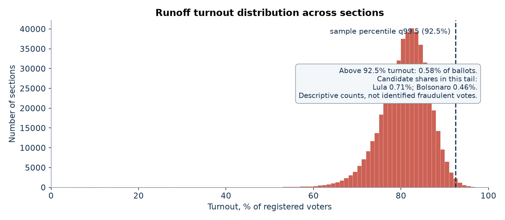
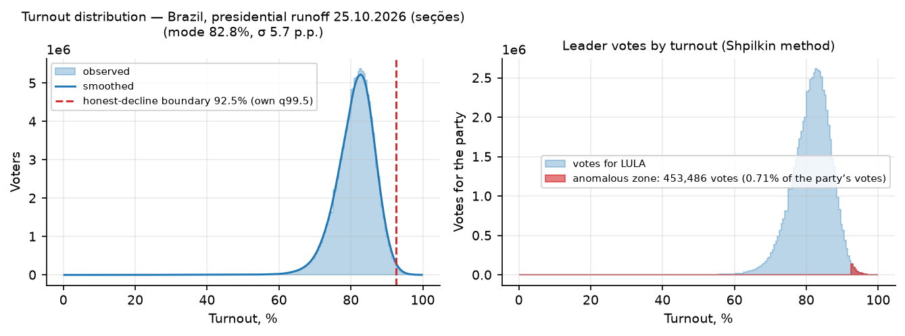
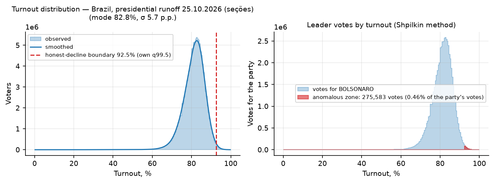
Does higher turnout come with a higher candidate share?
Across Brazil, neither candidate’s vote share rises much with turnout: the weighted correlations are +0.04 for Lula and −0.04 for Flávio Bolsonaro. The dots do not form a rising “tail”. This pattern alone cannot confirm or rule out fraud.
The nationwide weighted correlations are +0.04 for Lula and −0.04 for Flávio Bolsonaro. A value near zero means little overall relationship between turnout and vote share. The dots show no separate group with both high turnout and high support for either candidate. Geography and the way totals are grouped affect the pattern. A strong relationship would not prove fraud, and a weak one does not rule it out.
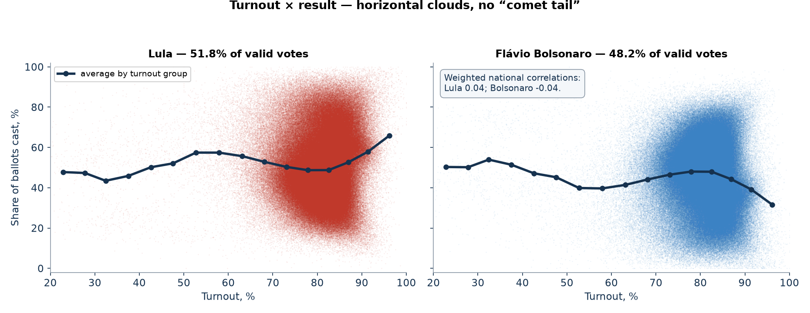
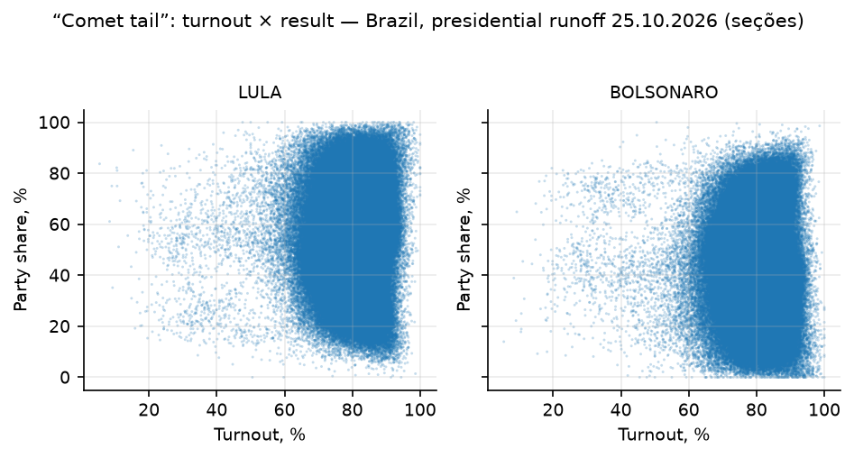
Do sections form an unusual group? (Klimek method)
I fitted a model with two groups of sections, using turnout and candidate share. Neither candidate has a separate group with both very high turnout and very high support. The second group has ordinary turnout, around 81%, and different candidate support.
The two-group model uses bell-shaped groups (a two-Gaussian mixture). For Lula, their centres are (79.9% turnout; 64.0% support) and (81.3%; 41.3%), with a mixture weight of 0.61. Bolsonaro’s groups mirror them. Both have ordinary turnout. The model describes regional differences in support, without separating a high-turnout, high-support group that would merit a closer look.
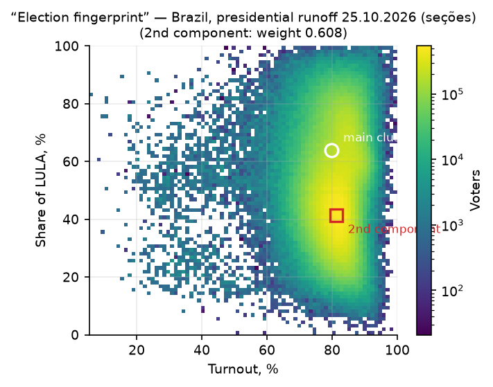
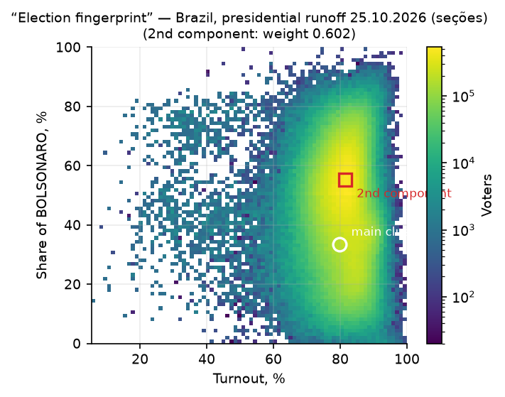
Too many round percentages? (Kobak method)
Exactly whole-percent turnout occurs in 1.68% of sections, close to the 1.70% expected in random simulations that keep section sizes. The difference is small (z = −0.8). Lula’s share also shows no excess (z = −1.0); for multiples of 5, |z| ≤ 1.6. Documented falsification cases can produce scores in the dozens.
I compare the number of whole percentages with random simulations that account for section size. Turnout lands on a whole percent in 1.68% of sections, versus 1.70% expected (z = −0.8). Lula’s whole-percent share gives z = −1.0. For percentages divisible by 5, the more targeted check, |z| ≤ 1.6. Here z measures how far the result is from the simulation average in units of its usual variation. Scores in documented falsification cases can reach dozens; these are small.
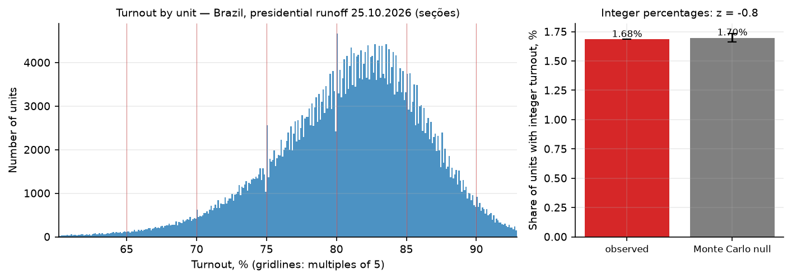
Second digits in vote totals (Benford test)
Second digits differ from the test’s expected patterns (largest gap 2.15 percentage points; p < 0.01). The first round showed a similar smooth pattern. Small vote counts and differences between sections can break the test’s assumptions, so this mismatch alone does not show fraud.
Benford’s rule predicts how often each second digit should appear in suitable sets of numbers. These candidate totals differ from it: the largest gap is 2.15 percentage points, with theoretical p < 0.01 for both candidates. Against a separate smooth-count simulation, Lula gives p = 1.0; Bolsonaro is at the simulation’s lowest measurable p value. With hundreds of thousands of small-count sections, small departures from a model’s assumptions can trigger a rejection. The first round showed a similar pattern. A smooth digit profile proves neither fraud nor its absence.
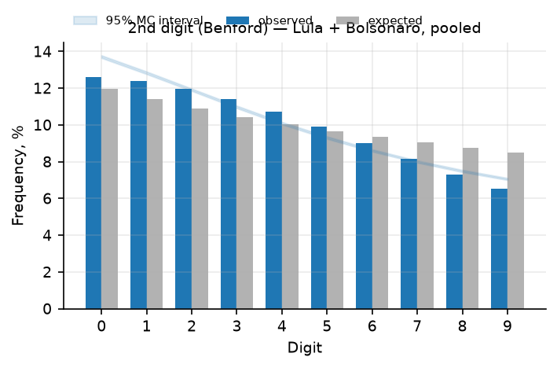
Last digits in vote totals (Beber–Scacco test)
For vote counts of at least 100, last digits are close to equally common: the largest difference is 0.56 percentage points. The combined excess of 0 and 5 is at most 0.45 points. The chi-square test still rejects equal frequencies in this large sample, but that alone cannot tell whether numbers were invented.
I use counts of at least 100 votes. Compared with equally common last digits, the largest difference is 0.56 percentage points (Lula 0.53; Bolsonaro 0.56). Digits 0 and 5 together exceed their expected frequency by at most 0.45 points. There is no large pile-up on these round-number endings. The differences are small, but a small difference is not a guarantee that every number is genuine.
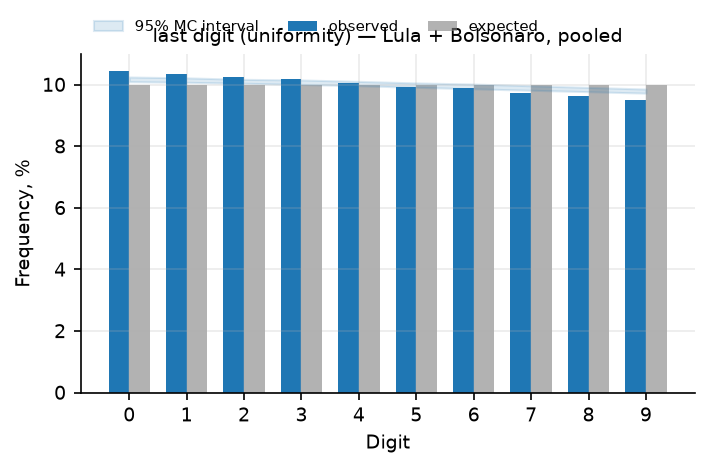
Turnout and candidate support within each state
Within states, the relationship between turnout and Lula’s share varies: correlations range from −0.48 to +0.23. Bolsonaro’s values run the other way because their valid-vote shares sum to one. The first round and 2022 show similar variation. These relationships alone cannot separate voter mobilisation from manipulation.
For Lula, state-level correlations between turnout and vote share range from −0.48 to +0.23. A negative value means less support where turnout is higher; a positive value means more support. Bolsonaro’s values mirror Lula’s because their valid-vote shares add to one. The first round showed a similar spread in these sections. These different local relationships mostly cancel out nationally, leaving a correlation near zero.
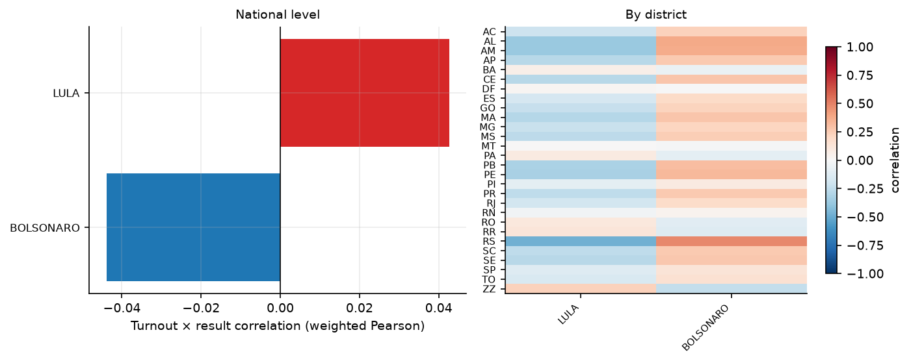
Unusual sections and repeated vote totals
Comparing sections within each municipality flags 5,018 (1.005%), close to round 1 (0.93%) and the 2022 comparison. Isolation Forest, a computer method set to flag about 1%, selects 4,993. Identical result totals appear in 2,348 rows across 1,172 groups, at most 3 sections per group. Small sections can match by chance. These flags suggest places to check, not findings of fraud.
The municipality comparison flags sections more than four usual units from the local pattern in turnout or support (robust |z|>4). It selects 5,018 sections (1.005%), with differences in both directions. Isolation Forest selects 4,993, about 1% by its setting. There are 2,348 identical rows in 1,172 groups, with at most 3 rows per group. The matching values are voters, Lula, Bolsonaro, blank and null votes. Such matches can occur by chance in small sections with only two candidates. Each flag needs local context; neither a flag nor its absence settles whether manipulation occurred.
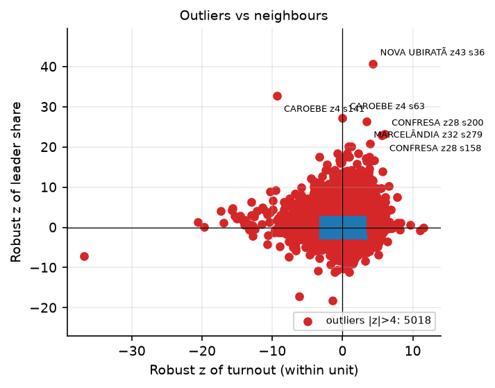
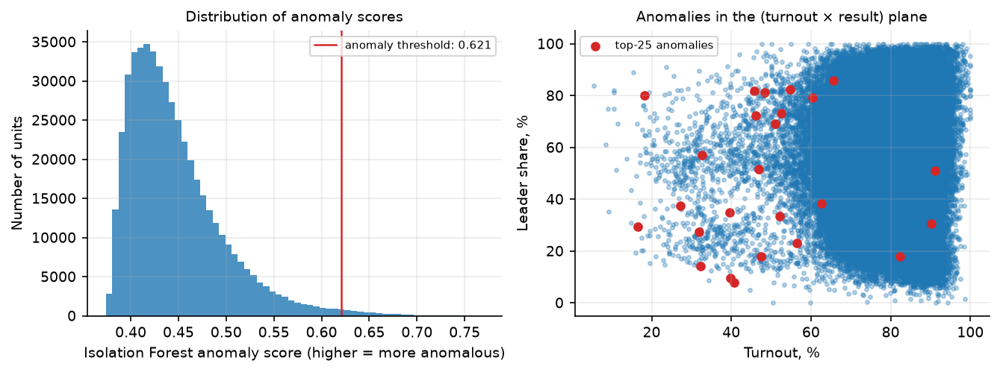
Results by voting-machine model
Four generations of voting machines were used. Among generations covering at least 4M registered voters, Lula’s share ranges from 51.5% to 53.8%. His highest share is on the oldest model, UE2013 (2.7% of voters). Models are used in different places with different electorates, so the raw differences do not show a machine effect or establish security.
The four models are UE2013 (12,455 sections), UE2015 (87,500), UE2020 (200,504) and UE2022 (198,746). Lula’s shares are 53.8%, 52.0%, 51.5% and 51.8%, respectively. His highest share is not on the newest machines. The models are used in different regions, so comparing these raw percentages mixes machine type with voter geography. It cannot establish a machine effect or certify machine security.
Comparison with 2022 and the first round
The high-turnout cutoffs are close: 91.5% in the 2022 runoff and 92.5% here. Above the 2022 cutoff sit 1.37% of Lula’s votes and 0.95% of Bolsonaro’s, versus 0.57–0.62% in 2022 at its own cutoff. The middle turnout increase was +1.91 percentage points between the 2026 rounds, with unusual drops and rises (5,156 down; 409 up). Between the two runoffs it was +1.14 points, with 0.78% of sections flagged. These comparisons do not establish manipulation.
The cutoff above 99.5% of sections is 91.5% in 2022 and 92.5% in 2026. The turnout shape is similar but shifted up, alongside the +1.86 percentage-point increase. At the stricter 2022 cutoff, the 2026 high-turnout votes are 1.37% of Lula’s total and 0.95% of Bolsonaro’s; 2022 gave 0.57–0.62% at its own cutoff. In matched sections, the middle turnout change (median) from round 1 to round 2 in 2026 is +1.91 points. The screen flags 1.12% with unusual changes (|z|>4): 5,156 down and 409 up. From the 2022 runoff to the 2026 runoff, the median is +1.14 points and 0.78% are flagged: 2,864 up and 754 down. Vote-share changes are similar across ten turnout groups. These similarities describe the data; they do not prove absence of fraud.
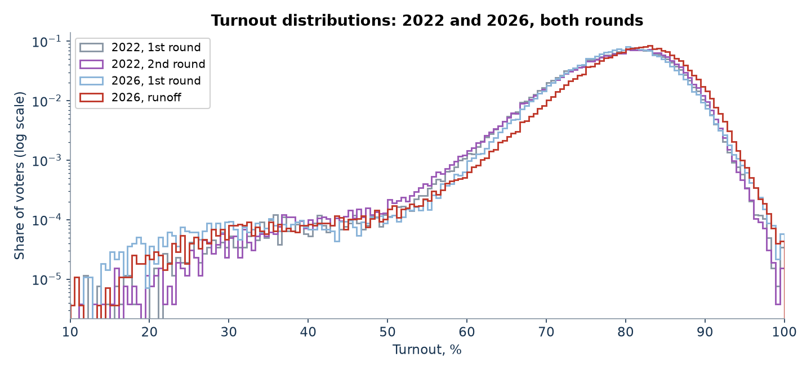
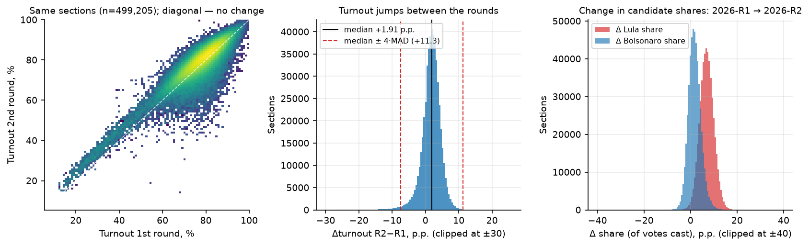
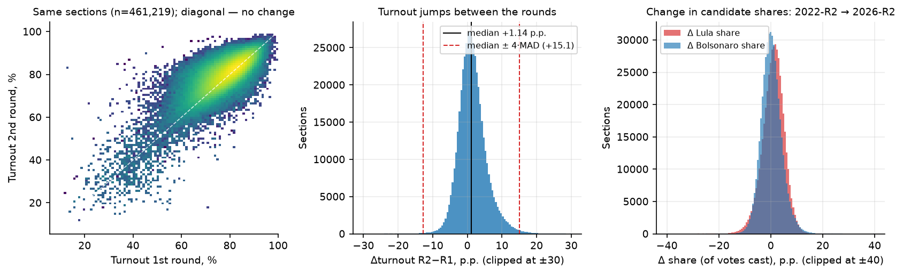
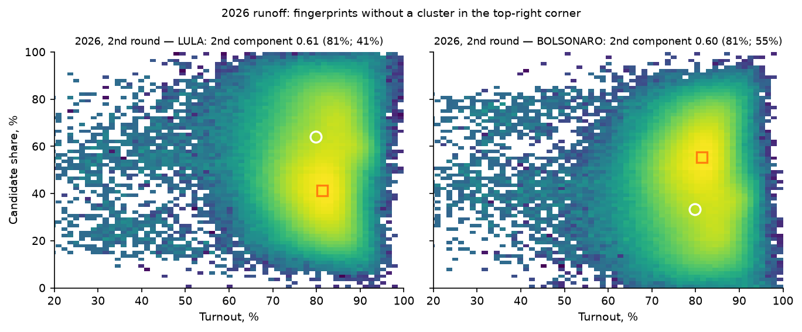
Can the checks spot two simulated changes?
I added 1.87M simulated votes for the leader in 10% of sections: the high-turnout vote count grew 15.5-fold. Setting turnout to whole percentages in 5% of sections moved the round-number score from z = −0.65 to 9. The checks respond to these two changes; this does not test every kind of manipulation.
In the specified simulation, I added 1,870,878 votes for the leader in 10% of sections, above the turnout cutoff. His high-turnout votes rose from 453,486 to 7,048,037, a factor of 15.5. In a second simulation, I set turnout to whole percentages in 5% of sections (24,772 sections); the round-number score rose from z = −0.65 to 9.0. These results show sensitivity to the specific changes tested, not to every manipulation of a similar size.
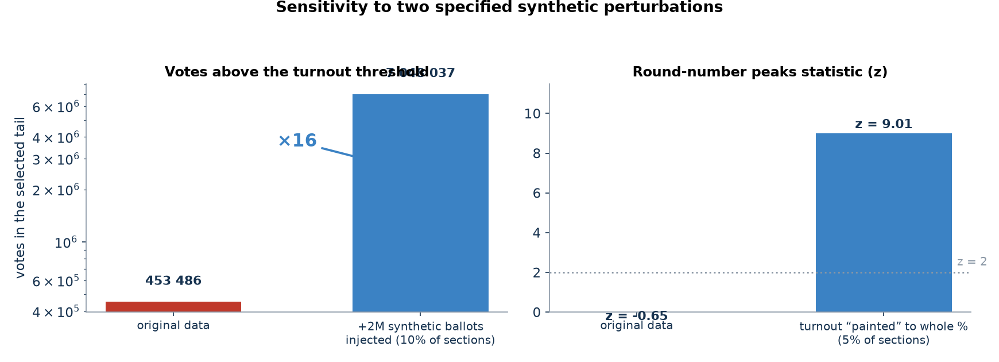
What these checks cannot tell us
I checked published totals, not voting-machine security or how ballots were handled. The 2022 election is a comparison, not a guarantee of clean data. Tests can miss manipulation. Their assumptions matter: nearby sections may behave alike, and running many tests raises the chance of a flag. The digit results illustrate these limits. Vote-transfer models use section totals and cannot tell how any person voted, even when they fit those totals well. I saved only 13 election-night snapshots; early state tables were behind the national total.
Data, code and sources
- TSE published the runoff data on 26–27 October: 499,248 polling sections. All arithmetic checks pass. Total ballots, blank and null votes, and both candidates’ votes match my separate election-night portal record exactly. First-round data and the 2022 comparison are also on the TSE open-data portal.
- 64,256,232 and 59,826,041 valid votes, plus 1,430,496 blank and 2,723,305 null votes, add to 128,236,074 ballots. That is 80.78% turnout among 158,745,502 registered voters. The archive includes the 13 election-night snapshots and their results by state.
- The analysis code is open source (Python, pandas and scikit-learn). It includes the Shpilkin, Klimek, Kobak and Beber–Scacco methods, local comparisons, Isolation Forest, comparisons by machine model and election year, and checks with simulated changes.
- The project repository contains the capture, scripts, figures and the full technical report for the runoff.
- The first-round analysis and PARADOXES.md explain the 2022 transfer estimates, the scenario built from them, and how it compared with this runoff. The limits above apply to these estimates too.